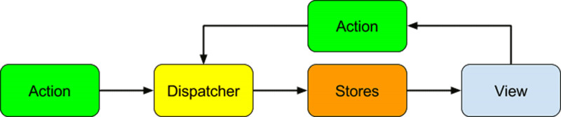

A quick look
What is RxJS?
With rxjs, everything is a stream.
How about an example?
So then what is Redux?
Well, it's an implementation of Flux
Flux?
Yes, Flux
An application architecture
@ngrx/store
and some @ngrx/effects
Actions
import { Action } from '@ngrx/store';
import { SomeThing } from '../models';
export const ADD_SOME_THING = '[SomeThing] Add';
export class AddSomeThingAction implements Action {
readonly type = ADD_SOME_THING;
constructor(public payload: SomeThing) { }
}
Dispatcher
@Component({
selector: 'some-thing-page',
template: 'some-thing.html'
export class CollectionPageComponent {
someThing: Observable;
constructor(store: Store) {
this.someThing = store.dispatch(
new AddSomeThingAction(
models.SomeThing.Create()));
}
}